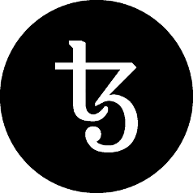

The Tezos Community Condemns The Foundation Investigating Itself

The Tezos Community reiterates it’s complete loss of trust and faith in Mr. Gevers. We do not recognize the legitimacy of a board investigating itself, a deeply disturbing conduct that further demonstrates poor governance. The Tezos community requests that the Tezos Foundation’s legal counsel immediately release the complete audit to the public as well as the Swiss Foundation Authority.
As we made clear in our Community Petition, we repeat our request for the resignation or dismissal of Mr. Gevers, regardless of the results of audits, either internal or external, because of Mr. Gevers’ enumerated failures that are beyond the scope of an audit, such as issues of trust, poor communication and his fraught relationship with the Tezos Community and DLS.
Mr. Gevers presiding over an investigation of himself and coming to a conclusion should demonstrate to the entire crypto community, but especially to the competent Swiss Regulatory Authorities, that the allegation of self-dealing is not without merit. Investigating oneself and coming to a conclusion is the very essence of self-dealing.
Any board member who has so significantly lost the trust of the Community would long have resigned for the good repair of the community and for moving Tezos from scandal to successful launch. But it is clear for the whole world to see that Mr. Gevers’s commanding, overriding interest is not Tezos, but the preservation of Mr. Gevers.
The Tezos Community Petition Organizers